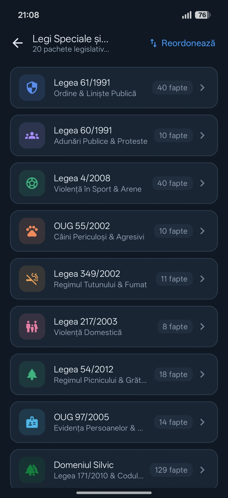
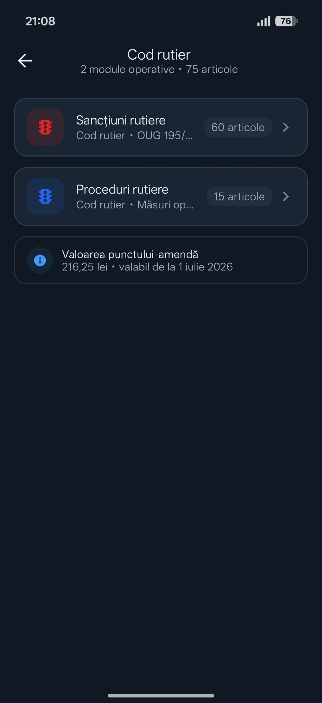
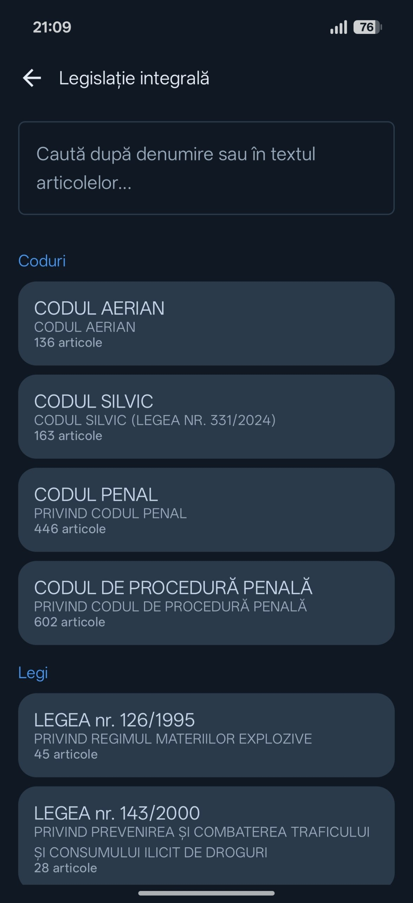

JAC — legislație, Ghid Operativ și calendar de tureClaritate în lege.Siguranță în decizie.
Baza legislativă cu 1.691 de articole stocate în telefon, căutare care îți arată încadrarea și amenda, Ghidul Operativ cu tipizate și modele completate, plus calendarul de ture Shiftr cu norma lunară și orele suplimentare.
+Legi speciale și contravențiiOrdine publică, silvic, arme și alte domenii
1.691articole în baza localăConsultate fără conexiune la internet
Legislație penală

Legi speciale

Cod rutier

Legislație integrală
Legislație integrală
Textul complet. Verificat la sursă.
Când ai nevoie de actul normativ întreg, modulul Legislație integrală îți oferă 27 de acte normative cu text complet, pe articole, încărcate local. Cauți după denumire sau direct în textul articolelor.
Coduri 4
Codul penalCod nr. 286/2009
Codul de procedură penalăCod nr. 135/2010
Codul SilvicLegea nr. 331/2024
Codul AerianCod nr. 21/2020
Ordine publică și contravenții 7
Legea nr. 61/1991conviețuire socială, ordine și liniște publică
Legea nr. 60/1991organizarea și desfășurarea adunărilor publice
OG nr. 2/2001regimul juridic al contravențiilor
Legea nr. 4/2008competiții și jocuri sportive
Legea nr. 407/2006vânătoare și protecția fondului cinegetic
Legea nr. 176/2024pescuit și protecția resursei acvatice vii
Legea nr. 54/2012activități de picnic
Domenii specifice și operative 14
Legea nr. 143/2000prevenirea și combaterea traficului și consumului de droguri
Legea nr. 194/2011substanțe psihoactive
Legea nr. 126/1995regimul materiilor explozive
Legea nr. 295/2004regimul armelor, componentelor esențiale și al munițiilor
HG nr. 11/2018normele metodologice ale Legii 295/2004 (arme)
Legea nr. 217/2003prevenirea și combaterea violenței domestice
Legea nr. 333/2003paza obiectivelor, bunurilor și valorilor
Legea nr. 349/2002prevenirea efectelor consumului de tutun
Legea nr. 365/2002comerț electronic
Legea nr. 145/2014reglementarea pieței produselor agricole
OUG nr. 55/2002câini periculoși sau agresivi
OUG nr. 97/2005evidența, domiciliul și actele de identitate
OUG nr. 34/2008Sistemul național unic pentru apeluri de urgență (112)
Legea nr. 171/2010contravenții silvice
Rutier 2
OUG nr. 195/2002circulația pe drumurile publice
HG nr. 1391/2006regulamentul de aplicare a OUG 195/2002
★Ghidul Operativ Inclus în PRO
În locul paginii goale, un model completat.
Ghidul Operativ conține 16 capitole cu tipizatele rapoartelor oficiale și, lângă fiecare, un exemplu completat corect pe spețe reale. Copiezi structura, completezi datele, acționezi procedural.
Achiziția se face în aplicație, prin Google Play Billing. Prețul și condițiile sunt afișate în aplicație înainte de cumpărare. Pe acest site nu se fac plăți.
Testare închisă
Solicită acces în Closed Beta.
JAC este în testare închisă și nu este disponibil pentru descărcare publică. Spune cine ești și din ce structură vii. Mesajul se deschide în aplicația ta de e-mail, către vladticu100@gmail.com. Nu există server în spatele formularului.